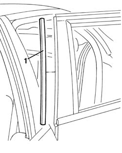

7010A50 rear side door anti-wind noise seal r r
- Path
- Procedures > 70 FITTINGS > 7010 PASSENGER COMPARTMENT REAR SIDE DOORS > 7010A rear side door assembly > 7010A50 rear side door anti-wind noise seal r r
- Kind
- repair procedure (removal / refitting; the operation number is the code)
- Applies to
- all engines; all production periods
- Interactive page
- https://sloeber94.github.io/elrnDB-a156/en/#/3238643
Applies to: all engines; all production periods
 Removing
Removing
 Refitting
Refitting1. Operating with caution, remove the anti-wind noise seal.

Applies to: all engines; all production periods
Refitting
RemovingCheck the anti-wind noise seal in order to verify it is complete and it does not show damage marks.
Place the anti-wind noise seal on its seat.